Fig. 11-1: Foto de la región visceral del cuello, se observa a la glándula tiroides y su relación con estructuras vecinas.
* = nervio vago.
i= istmo tiroideo;
l= lóbulo tiroideo;
ct= cartílago tiroides;
cc= cartílago cricoides;
t= tráquea;
1= arteria carótida común derecha;
2= arteria subclavia derecha;
3= vena yugular interna.
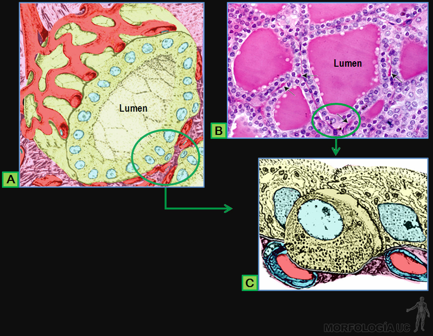
Fig. 11-2:
A) Esquema de la forma de un folículo tiroideo y su irrigación;
B) MO de corte por tiroides, teñido con HE;
C) dibujo de la estructura de las células foliculares y parafoliculares, tal como se ven al MET.
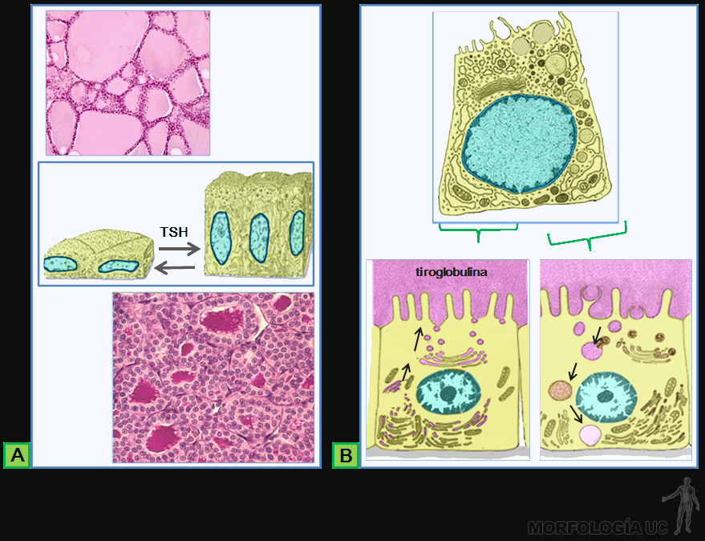
Fig. 11-3:
A) MO de cortes por folículos tiroideos teñidos con HE, junto a un esquema que muestra el cambio en las células foliculares según su estado funcional;
B) dibujo de la estructura de las células foliculares tal como se observa al MET, asociada a esquemas de: la síntesis y secreción de tiroglobulina a la derecha; y captación de tiroglobulina y liberación de las hormonas tiroideas a la izquierda.
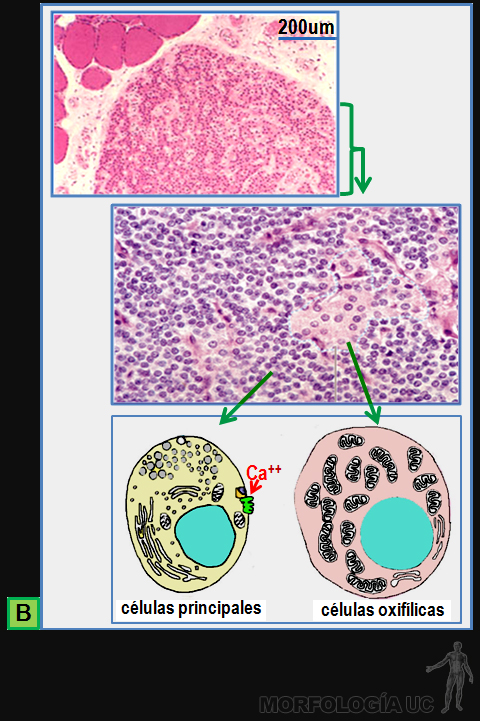
Fig. 11-4:
B) MO de cortes por paratiroides, observados a bajo y mayor aumento, teñidos con HE; los dibujos en la zona inferior de esta figura, muestran la estructura de células principales y oxifilas, tal como se observan al MET.
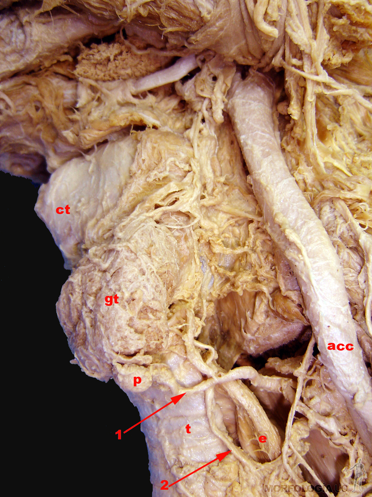
Fig. 11-4A:
p= glándula paratiroides;
gt= glándula tiroides;
ct= cartílago tiroides;
t= tráquea;
acc= arteria carótida común;
e= esófago;
1= arteria tiroidea inferior;
2= nervio recurrente laríngeo izquierdo.
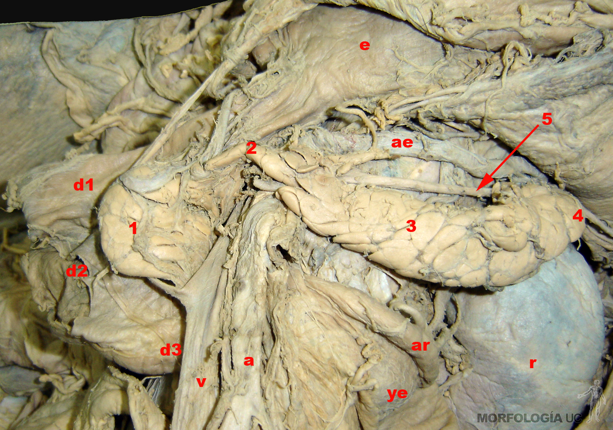
Fig. 11-5: Foto de la región retroperitoneal, se observa la disposición del páncreas y sus relaciones.
1= cabeza;
2= cuello;
3= cuerpo y
4= cola del páncreas;
d1, d2 y d3= 1ª, 2ª y 3ª porciones del duodeno respectivamente;
v= vena y
a= arteria mesentérica superior pasando por debajo del cuello del páncreas;
ae= arteria esplénica;
5= vena esplénica;
ye= yeyuno;
ar= arteria renal izquierda;
r= riñón izquierdo;
e= estómago.
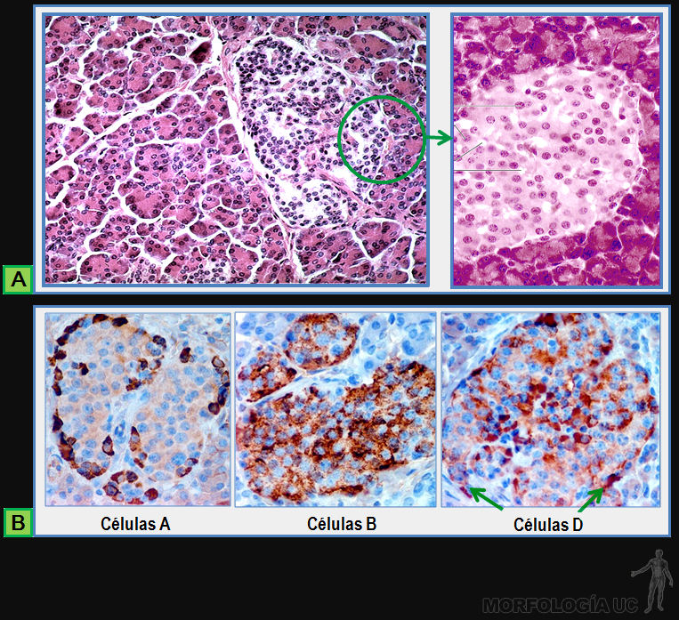
Fig. 11-6:
A) MO de cortes por lobulillo pancreático con islote de Langerhans entre acinos secretores exocrino, tinción H.E;
B) MO de cortes con tinción inmunocitoquímica para marcadores de células secretoras del islote.
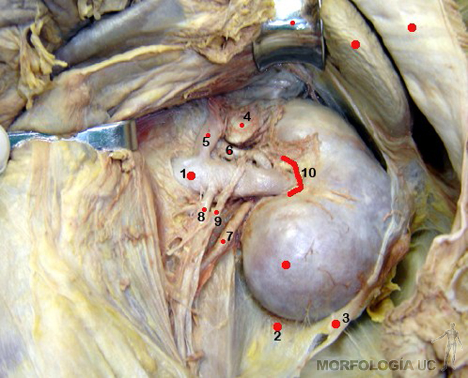
Fig. 11-7: Foto de la región retroperitoneal izquierda que muestra a la glándula suprarrenal y sus relaciones.
1= vena renal;
2= hoja posterior de la fascia renal;
3= hoja anterior de la fascia renal, que delimita con 2 la celda renal;
4= glándula suprarrenal, que recibe a
5= vena adrenal izquierda;
6= rama de la arteria renal;
7= uréter;
8= vena gonadal izquierda;
9= arteria gonadal accesoria originada desde la arteria renal;
10= hilio renal.
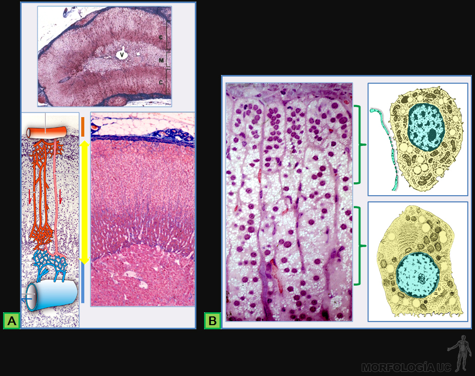
Fig. 11-8:
A) MO de cortes teñidos con Mallory Azan por suprarrenal en que a bajo aumento, está su estructura completa y mayor aumento la corteza y parte de la médula, el esquema junto a este corte destaca su irrigación;
B) MO de la corteza suprarrenal, tinción H.E, junto a dibujos de la estructura de las células secretoras de las zonas glomerular y fascicular, como se observan al MET.
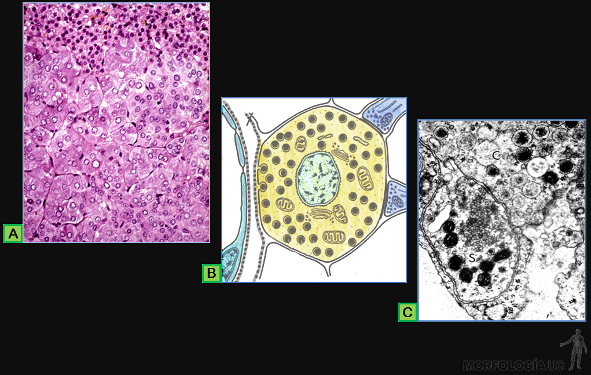
Fig. 11-9:
A) MO de corte por la médula suprarrenal, tinción HE;
B) esquema de la organización de una célula croma fin;
C) imagen de sus gránulos de secreción observados al MET.
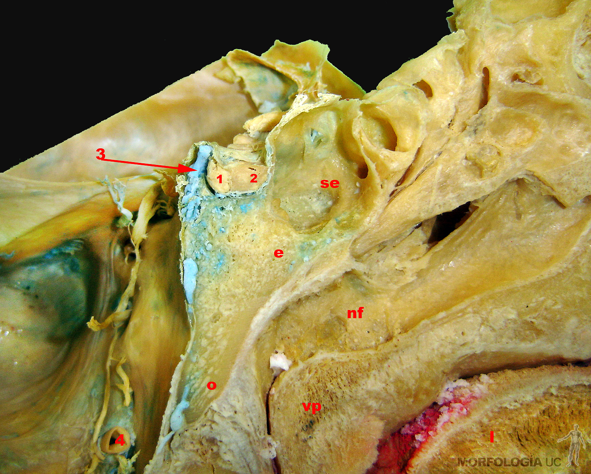
Fig. 11-10: Foto de un corte sagital de cabeza que muestra a la hipófisis y sus relaciones.
1= neuro hipófisis;
2= adeno hipófisis;
3= seno venoso intercavernoso;
4= arteria vertebral izquierda;
se= seno esfenoidal;
e= cuerpo del esfenoides;
o= porción basilar del occipital;
nf= nasofarínge;
vp= velo del paladar;
l= lengua.
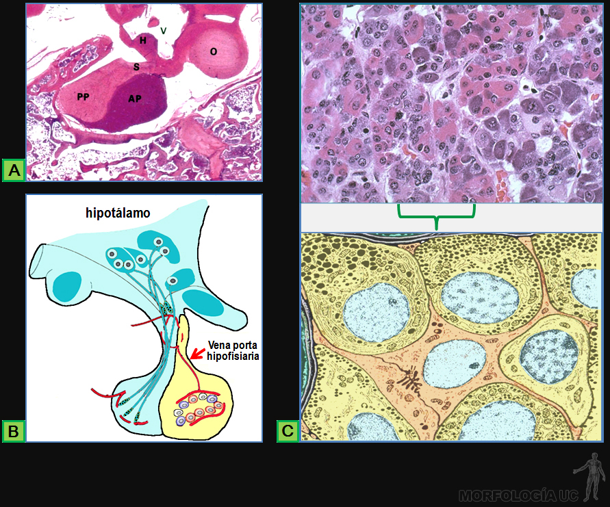
Fig. 11-11:
A) MO corte a través de la hipófisis que muestra la disposición de la neurohipófisis y la adenohipófisis; el esquema, en la parte inferior, destaca su organización celular y su irrigación;
B) MO de corte, teñido con HE, que muestra su organización celular de la adenohipófisis;
C) Dibujo de la estructura de sus cordones epiteliales, tal como se observan al MET.
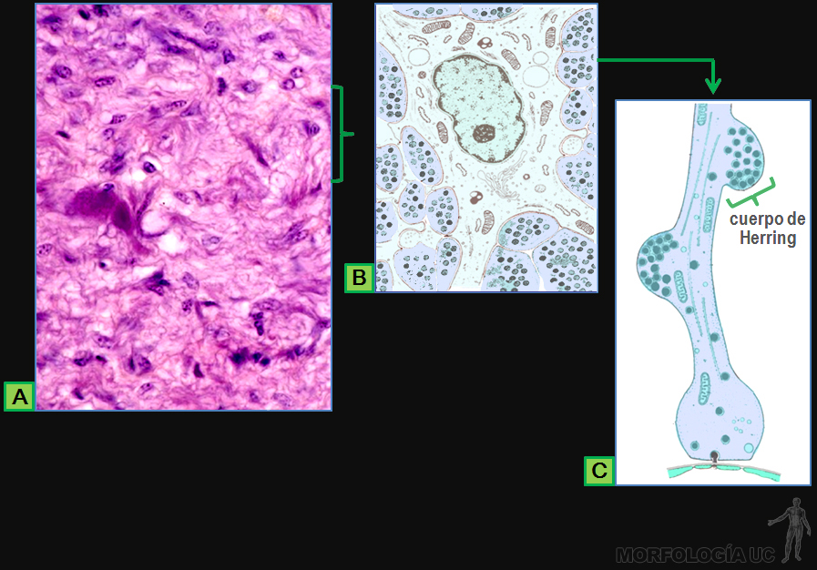
Fig. 11-12:
A) MO de corte por la neurohipófisis, teñido con HE, que muestra su organización histológica;
B) Dibujo que muestra la: relación entre los axones y un pituicito, tal como se observa al MET. y en;
C) Esquema de un axón neurosecretor con cuerpos de Herring junto a un capilar sanguíneo.